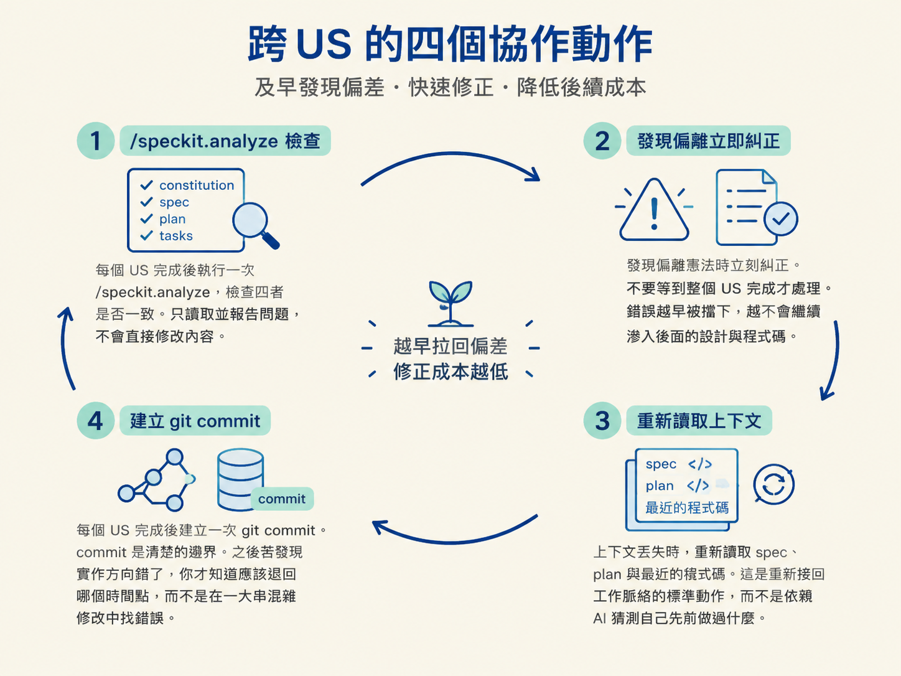
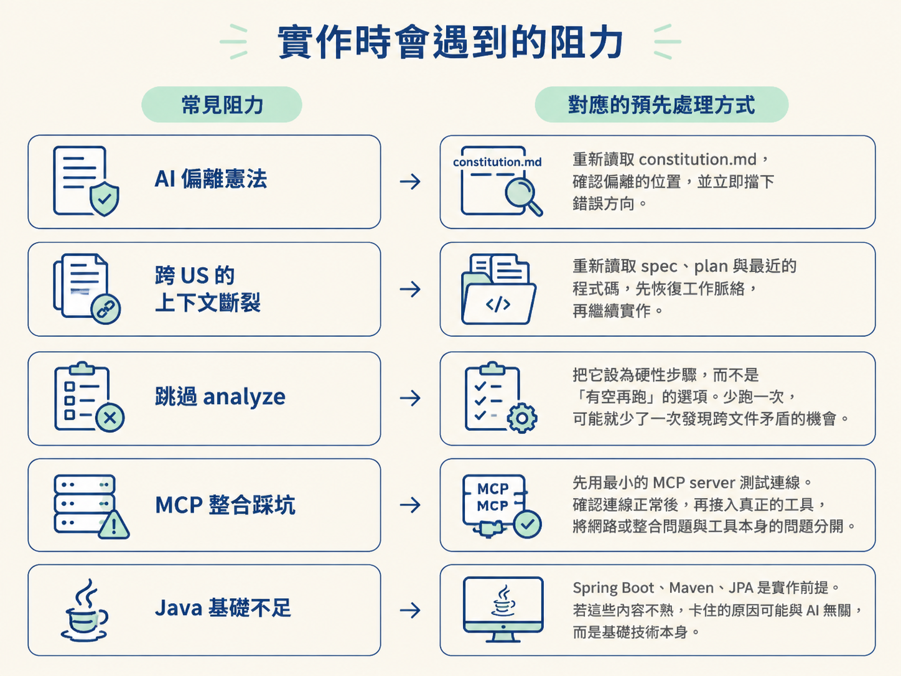

AI agent 可以很快完成一個 US（User Story），但「快」不等於「沒有偏差」。當它一路做到 US-3，可能已經忘記 US-1 定下的 provider 規則；產生程式碼時，也可能悄悄偏離憲法。這就像火車離開軌道後，速度越快，修正成本越高。
本篇的重點，是在實作過程中設計幾道固定護欄：定期檢查跨文件的一致性、及早糾正偏離、在上下文中斷時重新接軌，並用 commit 留下可回退的邊界。完成後，你應該能列出跨 US 的協作動作與五個最容易寫錯的地方，也知道 AI 跑偏時要如何處理。
準備階段做得再完整，實作時仍會遇到一個根本問題：AI agent 的上下文會斷。
上下文一旦變短或遺失，AI 不一定會明確告訴你「我忘了」。它可能繼續產生看似合理的程式碼，只是已經不再符合先前的決策。例如，它可能忘記 provider 必須遵守的註冊方式，或漏掉憲法要求的審計持久化。
因此，護欄不是用來取代 AI，而是用來處理上下文斷裂後的偏移。越早發現，修正範圍越小；等整個 US 做完才回頭檢查，錯誤可能已經擴散到 spec、plan、tasks 和程式碼。
每個 US 都應該遵循同一個回饋迴圈。它的目的不是增加儀式感，而是讓每個階段都有機會把偏差拉回來。
/speckit.analyze。它會檢查 constitution、spec、plan 與 tasks 之間是否一致。這個命令只讀取並報告問題，不會直接修改內容。官方建議的時機是完成 tasks 之後、開始 implement 之前。
OryxOS 專案中反覆出現的問題，集中在以下五個地方。它們看起來像實作細節，實際上都對應到已經定下來的架構決策。
| 易錯點 | 正確做法 |
|---|---|
| 開啟 Spring AI 的自動工具執行 | 在任務中明確關閉，避免工具被呼叫兩次。 |
| 用型別掃描自動註冊 provider | 改用明確的 name → ChatModel 映射，讓使用哪個 provider 可以被直接判斷。 |
| 把 Tool 拆成多個模組 | 維持 Tool 的單一抽象，不要依工具種類任意拆分模組。 |
| 把 SkillLoader 當成 Tool | SkillLoader 是載入器，不是工具；兩者的職責必須分開。 |
| 審計表沒有持久化 | 在 US-5 將審計表寫入 SQLite，符合憲法中的原則。 |
這五個問題有共同原因：憲法其實已經寫明規則，但 AI 在上下文丟失後，可能用直覺完成工作，或直接略過看似麻煩的部分。/speckit.analyze 的價值，就在於從 constitution、spec、plan 到 tasks 逐層比對，抓出這類跨階段的遺漏。
除了五個固定易錯點，實際推進時還有幾種常見阻力。每一種都應該有預先決定的處理方式，避免臨場靠猜。

護欄也適用於開發流程使用的工具。Spec-Kit 本身如果持續變動，或混入品質不一的擴充套件，流程就可能出現另一種行為漂移。
護欄的本質不是「不信任 AI」，而是承認上下文會斷，而上下文一斷，行為就可能漂移。因此，要用外部機制——
analyze、commit 邊界與憲法——把實作拉回既定軌道。